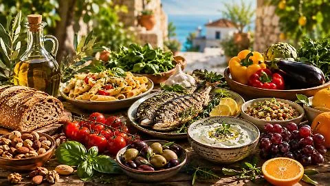

la dieta mediterranea è riconosciuta come patrimonio culturale e immateriale dell'Unesco e si basa sulle abitudini alimentari e sullo stile di vita tradizionali dei paesi del bacino del Mediterraneo. La dieta privilegia cibi freschi, stagionali e poco processati, con una suddivisione indicativa dei macronutrienti.
